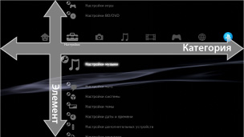
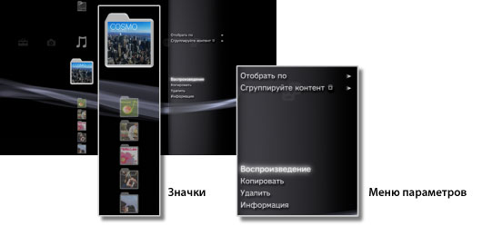
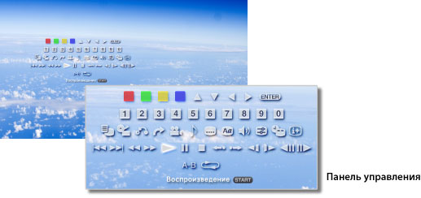

Меню XMB™ > Меню XMB™ (XrossMediaBar)
Меню XMB™ (XrossMediaBar)
Использование меню XMB™
Пользовательский интерфейс системы PS3™ называется XMB™ (XrossMediaBar). B горизонтальном ряду отображаются функции и категории системы, а в вертикальной колонке отображаются элементы, которые могут быть использованы в любой категории.

| Кнопки направлений | Выбор категории или элемента. |
|---|---|
Кнопка |
Подтверждение выбора элемента. |
Кнопка |
Отмена операции. |
Кнопка |
Просмотр меню параметров/панели управления. |
| Кнопка PS | Просмотр меню XMB™. |
Воспроизведение содержимого
В меню XMB™ выберите материалы, сохраненные на диске или носителе информации, затем нажмите кнопку . Чтобы остановить воспроизведение, нажмите кнопку .
Подсказка
Для использования носителя информации в некоторых моделях системы PS3™ может потребоваться соответствующий адаптер USB (не включенный в комплект поставки).
Панель сведений
На панели сведений, расположенной в правом верхнем углу экрана, указаны такие данные, как число ваших друзей в сети, уведомления о новых сообщениях и последние новости из раздела [Что нового?].

(1) |
Аватар * |
|---|---|
(2) |
Число друзей в сети * |
(3) |
Уведомление о новом текстовом чате * |
(4) |
Уведомление о новом сообщении |
(5) |
Дата и время |
(6) |
Пиктограмма занятости |
(7) |
Новости из раздела [Что нового?]* |
* Отображается, когда выполнен вход в сеть PSNSM.
Использование меню параметров
Выберите значок в меню XMB™, затем нажмите кнопку для отображения меню параметров. Меню параметров можно отобразить или скрыть, нажав кнопку .

Элементы меню параметров
Элементы меню параметров зависят от категории.
| Воспроизведение / Запуск / Просмотр | Воспроизведение контента. |
|---|---|
| Вынуть диск | Выньте диск. |
| Удалить | Удаление контента. |
| Копировать | Копирование данных на системный накопитель или на носитель информации.*1 |
| Информация | Просмотр информации по контенту. Некоторая информация, например имя, может быть изменена. |
| Добавить в список воспроизведения | Добавление данных в список воспроизведения. |
| Отобразить все | Просмотр всех папок, хранящихся в носителе информации или запоминающем устройстве USB.*1 |
| Отобрать по | Сортировка элементов контента по имени, дате и т.д. |
| Сгруппируйте контент | Изменение метода группировки для группировки по альбому, формату или другим параметрам.*2 |
| Многократное удаление | Выбор нескольких элементов контента и удаление их всех сразу. |
| Многократное копирование | Выбор нескольких элементов контента и копирование их всех сразу. |
| *1 |
Для использования носителя информации в некоторых моделях системы PS3™ может потребоваться соответствующий адаптер USB (не включенный в комплект поставки). |
|---|---|
| *2 |
Данные, не имеющие требуемых для группировки сведений, помещаются в папку [Неизвестный]. Некоторые данные могут быть не сгруппированы. |
Использование панели управления
При воспроизведении материалов нажмите кнопку для отображения панели управления. Панель управления можно отобразить или скрыть, нажав кнопку . Элементы панели управления зависят от воспроизводимого контента.

Использование нескольких функций одновременно
Пользователи могут использовать несколько функций одновременно. Например, можно просматривать изображения в категории  (Фото) или пользоваться Интернетом в категории
(Фото) или пользоваться Интернетом в категории  (Сеть) во время воспроизведения музыки в категории
(Сеть) во время воспроизведения музыки в категории  (Музыка) отображаются следующие значки.
(Музыка) отображаются следующие значки.
Пример: просмотр изображений в категории (Фото) во время воспроизведения музыки в категории (Музыка)
1. |
Прослушайте музыку в разделе |
|---|---|
2. |
Нажмите кнопку PS. |
3. |
Выберите изображения, которые необходимо просмотреть в категории |
Подсказки
- Нельзя воспроизводить содержимое категории (Музыка) одновременно с использованием других функций во время воспроизведения Super Audio CD или при установке для параметра
 (Настройки) > (Настройки музыки) > [Частота вывода] значения [44,1/88,2/176,4 кГц].
(Настройки) > (Настройки музыки) > [Частота вывода] значения [44,1/88,2/176,4 кГц]. - В зависимости от типа воспроизводимого контента некоторые функции, которые обычно можно использовать одновременно, недоступны.
Примечание
компакт-диски Super Audio CD не могут воспроизводиться на некоторых системах PS3™. Подробнее см. в разделе [Типы воспроизводимых дисков].